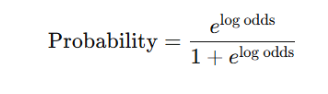
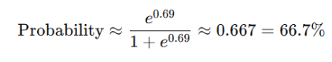
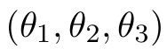
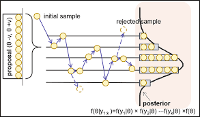
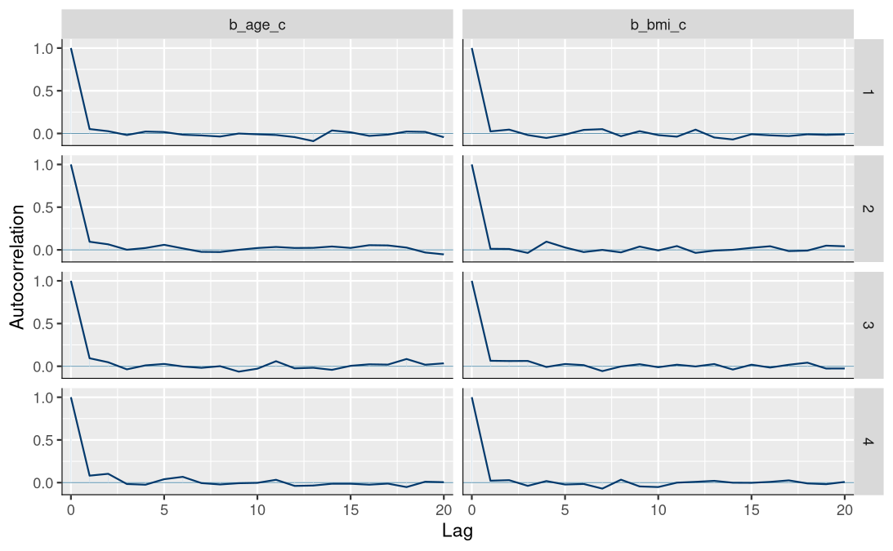
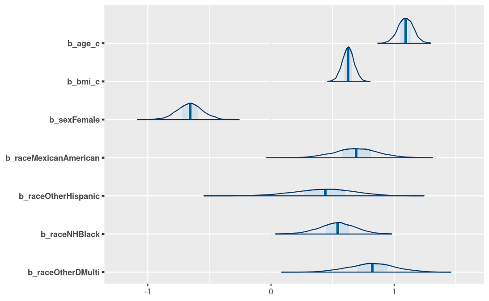

Bayesian Logistic Regression for Diabetes Risk Prediction (NHANES 2013 - 2014)
Capstone Presentation
Bayesian Model
Bayes’ Theorm is based on conditional probability.
Bayesian inference estimates the posterior probability of a parameter:
\[ P(\theta \mid D) = \frac{P(D \mid \theta)\, P(\theta)}{P(D)} \]
Bayesian Inference in the Model
In the Model
θ (Parameters):
Regression coefficients (eg:age, BMI, sex, and race)D (Data):
Data (eg:NHANES) with the observed disease status (eg: diabetes) and covariates
Prior P(θ):
Prior beliefs about effect sizes before seeing data
(weakly informative priors centered around “no effect”).Likelihood P(D\θ):
Probability of the observed disease outcomes given the parameter values
(logistic regression model).Marginal Likelihood P(D):
Normalizing constant ensuring the posterior is a valid probability distributionPosterior P(θ/D):
Updated probability distribution for predictor effects (eg: age, BMI, sex, and race) after observing the data — This is brms model estimates

Bayesian Regression
- Logistic link function used for binary outcomes.
- logit (𝑃(𝑌=1))= (intercept) + 𝛽age_𝑐 + 𝛽bmi_𝑐 + 𝛽sex + 𝛽race
Logistic link transforms the linear predictor into a probability between (0 and 1)
Eg: log odds = 0.69


- Converts changes in predictors into changes in log-odds of the outcome.
- In Model: links age, BMI, sex, and race to the probability of having diabetes.
Intercept prior: student_t(3, 0, 10) — (Van de Schoot et al., 2013)
- df = 3 (degrees of freedom): heavy tails- allow for occasional extreme values.
- location = 0: Centered at 0, so the prior expects the parameter to be near 0
- scale = 10: Controls spread out the distribution (Larger scale → wider spread).
Prior for Regression coefficient : normal(0, 2.5) (Van de Schoot et al., 2021)
- weakly informative with Mean = 0, Standard deviation = 2.5
- probability of very large or very small parameter values is very low and stabilizes the model

MCMC (Markov Chain Monte Carlo)
Gibbs sampler produces a sequence of random vectors 
Each sample depends on the past only through the most recent one.
The samples are not just random but are drawn in a way that the long-term distribution of the samples matches the target posterior distribution.
It uses a burn in period.
The random vectors are sequentially dependent. Retain one parameter vector every n iterations, and discard the rest.

GIBBS SAMPLER: A specific algorithm that falls under the MCMC category
post <- posterior_summary(bayes_fit, robust = FALSE) %>% as_tibble(rownames = "term")
# Extract convergence diagnostics
diag <- rstan::monitor(as.array(bayes_fit$fit), print = FALSE) %>%
as_tibble(rownames = "term") %>%
select(term, Rhat, n_eff = Bulk_ESS)
bayes_results <- post %>% left_join(diag, by = "term") %>% mutate(
OR = exp(Estimate),
OR_LCL = exp(Q2.5),
OR_UCL = exp(Q97.5)
) %>% select(term, Estimate,Est.Error,Q2.5, Q97.5,Rhat, n_eff, OR, OR_LCL, OR_UCL )rstan::monitor( samples = rstan::extract(fit, permuted = FALSE), probs = c(0.025, 0.5, 0.975) ) Provides the following summaries:
- Posterior mean and standard deviation (SD)
- Monte Carlo standard error (MCSE)
- Quantiles: 2.5%, 25%, 50%, 75%, 97.5%
- Effective sample sizes: Bulk_ESS and Tail_ESS
- R-hat (convergence diagnostic)
warmup= 1000
total draws = 4000

Model Diagnostics
R-hat ≈ 1 → good chain mixing
Effective sample size
Trace & Autocorrelation plots show convergence (no drift across iterations), well-mixed chains without trends with stable posterior estimates.
- precise estimates, with high uncertainty narrow distributions, smooth and unimodal → no multimodality confirming stable posteriors.
- histogram: distribution of sampled coeffs. after convergence across all mcmc draws

 
Results: chain mixing, convergence, correlation of draws with lagged values across iterations
Posterior predictive Distribution
MCMC samples, which represent the posterior distribution of the model parameters
Posterior draws = 4000 (4 chains × 1000 iterations) for posterior predictive checks.
- The distribution of predictors after seeing the data.
- The posterior is the conditional distribution of the parameter given the data.
- Subjectivity is present when the prior distribution influences the conclusions.
- The influence of the prior goes to zero as the sample size increases.

Posterior Results


Interpretation
Posterior Coefficients
Age (per 1 SD): strong positive effect (≈ +1.1, 80% CrI ≈ 0.9–1.3).
BMI (per 1 SD): positive association (≈ +0.6, 80% CrI ≈ 0.45–0.75).
Female: slightly protective (≈ –0.2, CrI spans slightly below zero).
Mexican American: small positive effect (≈ +0.25, wide CrI).
Other Hispanic: moderate positive effect (≈ +0.35, wide CrI).
Non-Hispanic Black: clear positive effect (≈ +0.75, CrI ≈ 0.6–0.9).
Other/Multi: small positive effect (≈ +0.3, wide CrI).
Prior and Posterior Predictive Distribution (age and BMI)
Prior vs Posterior Distributions 
Strong positive relationship between age, BMI, and diabetes probability.
Posterior predictive checks confirm good model fit.
Imputation reduced bias and improved robustness.
Posterior Predictive Checks
500 draws: predicted outcomes for each observation compare ( observed data vs predeicted outcomes: binary outcome with 0 or 1 simulated

Diabetes Prevalence (Survey weighted NHANES vs Predicted)
 |
| 
Prevalence of diabetes (Posterior-predicted vs NHANES survey-weighted)
- NHANES survey-weighted estimate (8.9%, SE = 0.0048).
- The predicted posterior mean was 10.95%, with a 95% credible interval of 8.5%–12.8%.
- Although the model predicts slightly higher prevalence, the credible interval overlaps the NHANES estimate.
Model is well-calibrated, with NHANES falling near the lower end of the posterior distribution but still within a plausible range
Observed vs. Predicted Average diabetes outcome across individuals

- Each point = one observation (an individual)
- x-axis = observed value (
0or1in your binary diabetes variable) - y-axis = average predicted posterior probability for that same individual across simulated datasets
- Points near (0, 0) or (1, 1) → good prediction

- Each point represents an individual’s observed BMI versus the model’s predicted mean.
- Error bars indicate the 95% credible intervals of the predictions.
- The plot demonstrates that the model’s predictions generally align with the observed data
Compare Models
- Survey-weighted maximum likelihood estimation (MLE)
- Bayesian regression
svy_tbl <- svy_or %>% mutate(Model = "Survey-weighted MLE")
bayes_tbl <- bayes_or %>% mutate(Model = "Bayesian")
- Age and BMI: strong risk factors in both models for diabetes predictors.
- The Bayesian model complements frequentist approaches by providing stable, interpretable, and uncertainty-quantified estimates, while broadly reproducing population-level prevalence.
- The Bayesian model used normalized weights, which approximates the effect of survey weights but does not fully account for stratification, clustering, or design-based variance adjustments.
The Bayesian model shows minimal shrinkage and similar uncertainty, supporting the reliability and robustness of the results
Bayesian estimates are pulled slightly toward the prior mean (often toward zero or toward more moderate values) compared to classical estimates.
The Bayesian posterior did not pull the estimates very much. The observed data was strong enough to dominate the prior.
The prior was weakly informative, exerting only a small influence.
The Bayesian results remain very similar to the classical (survey-weighted) results.
Predicted Diabetes Prevalence vs. NHANES Prevalence

- We compared the Bayesian posterior-predicted diabetes prevalence with the NHANES survey-weighted estimate (8.9%, SE = 0.0048).
- The model’s posterior mean was 10.95%, with a 95% credible interval of 8.5%–12.8%. Although the model predicts slightly higher prevalence, the credible interval overlaps the NHANES estimate.
- This indicates that the model is reasonably well-calibrated, with NHANES falling near the lower end of the posterior distribution but still within a plausible range.
# pp_proportion <- rowMeans(pp_samples) # if not already done
known_prev <- 0.089 # NHANES prevalence
posterior_mean <- mean(pp_proportion)
posterior_ci <- quantile(pp_proportion, c(0.025, 0.975)) # 95% credible interval
pp_df <- tibble(proportion = pp_proportion)
ggplot(pp_df, aes(x = proportion)) +
geom_histogram(binwidth = 0.005, fill = "skyblue", color = "black") +
geom_vline(xintercept = known_prev, color = "red", linetype = "dashed", size = 1) +
geom_vline(xintercept = posterior_mean, color = "blue", linetype = "solid", size = 1) +
labs(
title = "Posterior Predicted Diabetes Proportion vs NHANES Prevalence",
subtitle = paste0("Red dashed = NHANES prevalence (", known_prev,
"), Blue solid = Posterior mean (", round(posterior_mean,3), ")"),
x = "Proportion of Diabetes = 1",
y = "Frequency"
) +
theme_minimal()R Square

Interpretation
- Explains about 13% of the variability in diabetes status, with credible uncertainty bounds suggesting reasonable but modest explanatory power.
- but other factors (e.g., genetics, lifestyle, environment) also contribute to outcome variability.
Translational Research Perspective
- Model enables individualized diabetes risk prediction using age, BMI, sex, race and outputs can guide actionable thresholds (e.g., risk >30%)
- BMI is modifiable- interventions can lower risk while sex and race remain constant.
- Selected one participant (adult[1, ]) with all covariates (age, BMI, sex, race)
- Obtain predicted probabilities from the logistic regression model. posterior_linpred(transform = TRUE)
- Posterior draws: calculate the 95% credible interval for the predicted probability
participant1_data <- adult[1, ]
phat1 <- posterior_linpred(bayes_fit, newdata = participant1_data, transform = TRUE)
post_pred_df <- data.frame(pred = phat1)
ci_95_participant1 <- quantile(phat1, c(0.025, 0.975))
ggplot(post_pred_df, aes(x = pred)) +
geom_density(color='darkblue', fill='lightblue') +
geom_vline(xintercept = ci_95_participant1[1], color='red', linetype='dashed') +
geom_vline(xintercept = ci_95_participant1[2], color='red', linetype='dashed') +
xlab('Probability of being diabetic (Outcome=1)') +
ggtitle('Posterior Predictive Distribution 95% Credible Interval') +
theme_bw() |
|
Result: Median predicted probability ≈ 0.25, with a 95% credible interval of 0.20–0.31, indicate a ~1 in 4 chance of diabetes.
- We computed the posterior predicted probability for a new participant data (age, BMI, sex, and race)).
- The density plot with 95% credible intervals captures both the most likely risk and uncertainty.

Results
- X-axis: Predicted probability of diabetes (Outcome = 1)
- Y-axis: Density of predicted probabilities
- Blue curve: Posterior predictive distribution
- Shaded area: High probability values near 1 = diabetes risk
- Red dashed line: Upper bound of 95% credible interval
- Peak: Most likely predicted probability ≈ 1